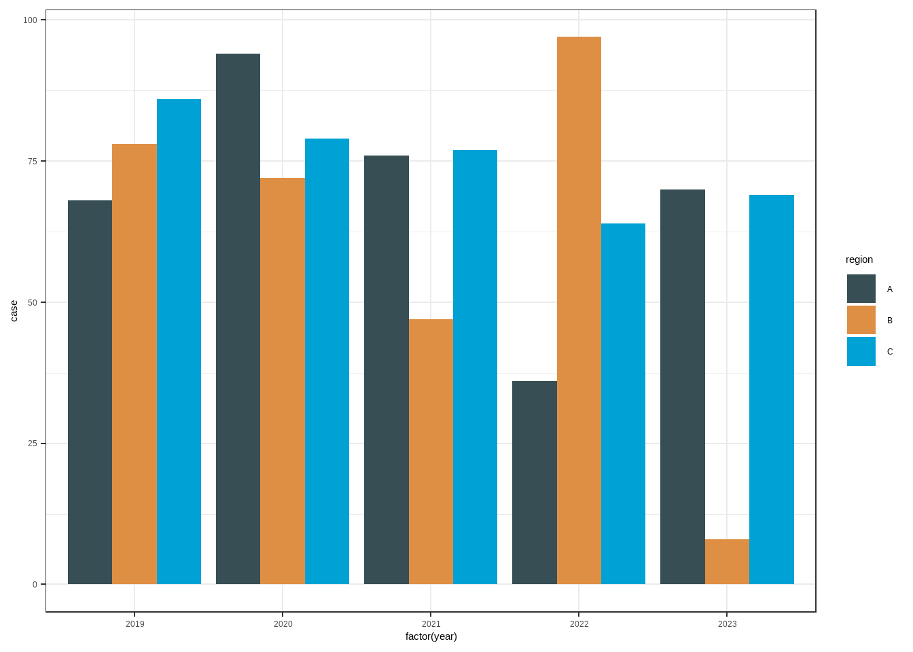

library(tidyverse)
data_longer<-data.frame(region=LETTERS[1:3],
year=rep(2019:2023,each=3),
case=round(runif(15)*100))
data_longer17 长宽数据转换
17.0.1 长转宽
data_wider1<-data_longer %>%
pivot_wider(id_cols = year,names_from = 'region',values_from = 'case' )
data_wider1data_wider2<-data_longer %>%
pivot_wider(id_cols = region,names_from = 'year',names_prefix = 'y_',values_from = 'case' )
data_wider217.0.2 宽转长
data_longer2<-data_wider1 %>%
pivot_longer(c(A,B,C),names_to = 'region',values_to='count')
data_longer217.0.3 作图多用长数据
ggplot(data_longer,aes(factor(year),y=case,fill=region))+
geom_col(position = 'dodge')+
theme_bw()+
ggsci::scale_fill_jama()